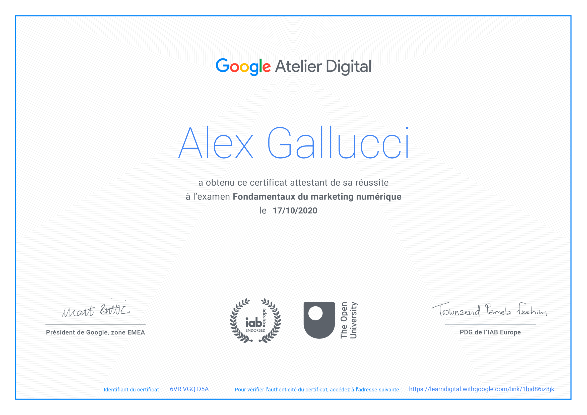

Âge ~ 21 ans
Hobbys ~ écriture, lecture &
violon électrique
Langues ~ français (C2),
anglais (B2), italien (B1)


Responsable informatique
Âge ~ 21 ans
Hobbys ~ écriture, lecture &
violon électrique
Langues ~ français (C2),
anglais (B2), italien (B1)
Actuellement administrateur informatique à l'usine de filature de laine peignée d'Ajoie SA.
J'ai eu l'occasion d'accumuler de l'expérience au service des infrastructures du canton du Jura.
M'occupant principalement de la migration des données vers le nouvel SGBD. Passant d'Oracle à Microsoft SQL Server, j'ai passé une grande partie de mon temps à traduire des requêtes de PL/SQL vers T-SQL.
Je me suis aussi occupé de mettre à jour les applications internes, notamment le module des finances, afin qu'elles fonctionnent sur la nouvelle base.
J'ai suivi une formation de 4 années en informatique à l'école de métiers technique de Porrentruy. J'ai eu l'occasion d'accumuler des connaissances en bases de données, communication, sécurité, réseau, développement logiciel, développement web (backend et frondent), poste de travail et sauvegardes.
Finalement, j'ai pu entamer biens des projets en tant qu'indépendant; Fondation d'un club de sécurité, développement de sites web pour des entreprises et mis en ligne d'applications Android.
Projets réalisés en tant qu'indépendant.
Tous ces projets ont été réalisés à 100% par mes soins.
Site web
i
Fondation d'Erotium Primus, un club de sécurité informatique.
Site web
i
Réalisation du site web de l'Écurie Des Couleurs (Wordpress).
Site web
i
Réalisation de mon ancien CV sous forme d'un site web basé sur des animations basiques en CSS (ViewBox).
App Android
i
Développement et publication sur le Play Store d'une application Android (Java avec BD SQLite) qui indique sous forme d'une liste ce qui a été fait dans la journée.
App Android
i
Développement d'une application Android (Java avec BD Android Room) de calcul de moyenne scolaire, basé sur le buletin semestriel de l'école des métiers techniques à Porrentruy.
Site web
i
Réalisation d'un blog en HTML & CSS.Projet réalisé en collaboration
Boutique en ligne
i
Août à décembre 2020
Projets réalisés dans le cadre du CFC d'informaticien
Internet des objets
i
Configuration d'un thermomètre sur le réseau SigFox d'internet des objets. Affichage automatique des températures sur un site web réalisé en HTML, CSS et PHP.
Affichage automatique des températures sur un site web réalisé en HTML, CSS et PHP. 

App Android
i
Développement d'un jeu vidéo sous forme de quiz. (Java avec BD SqLite)
Logiciel VB
i
Développement d'une application, en Visual Basic, de manipulation de données. Compatible sur Windows 10.
Jeu vidéo C++
i
Développement d'un jeu vidéo "Fruit Ninja" en C++ orienté objet.
Jeu vidéo Unity
i
Développement d'un jeu vidéo "Epic Wheel Hero" à l'aide de Unity (C#).
Mes différents postes et mes projets m'ont permis d'accumuler des compétences. C'est sur cette base que j'ai évalué mes compétences dans chaque domaine étudié.
HTML & CSS

Wordpress

PHP
T-SQL
PL/SQL
Javascript

Java
Modélisation
C++
Bureautique
Réseau
Windev
Mon apprentissage d'informaticien m'a permis une introduction et un approfondissement dans les domaines essentiels pour l'exertion de la profession.
Total des heures accumulées (modules ICT-berufsbildung pour le CFC d'informaticien d'entreprise).
Base de données
200+
Communication
160+
Sécurité
120+
Réseau
320+
Dév. logiciel
280+
Dév. Web
160+
Poste de travail
80+
Autre
80+
Certificat fédéral de capacité, informatique d'entreprise
Du 08.2018 au 06.2022 (4 ans)
Apprentissage d'informaticien à l'école des métiers techniques de Porrentruy.
Acquisition de connaissances en réseau, bases de données, modélisation de données, développement web (HTML, CSS, JS, PHP, Wordpress), développement logiciel (C#. C++, WinDev, VisualBasic, Java) et bureautique.
Participation au second tour des Swiss Olympiads In Informatic (SOI) en 2020 et premier tour en 2021
Certification et liste complète des modules acquis disponible ici.

Les fondamentaux du marketing numérique
Total: 40 heures
Certification d'acquisition de 26 modules sur le marketing digital, atelier digitale Google.
[EN COURS] Certification anglais niveau B2
Depuis le 01.01.2023
En formation pour passer une certification de langue niveau B2 (business vantage), Cambridge University.
Résumé du parcours
Administrateur informatique à l'usine FLASA
Depuis le 09.01.2023
Administration informatique à l'usine de Filature de Laine Peignée d'Ajoie SA ainsi que BeEnergy SA (société fille)
Stage au Service Des Infrastructures du canton du Jura
Du 01.10.2021 au 31.07.2022 (10 mois)
Stage effectué dans le cadre d'une migration du SGBD de production Oracle vers MS SqlServer.

Grade de soldat à la protection civile vaudoise
06.2022 (2 semaines)
Deux semaines de formation de base à la protection civile vaudoise en tant qu'aide à la conduite (AIC).
Activités ;
Instruction générale (première semaine) :
Instruction spécialisée (deuxième semaine) :
Bénévolat
Lecteur et violoniste au JuraPastoral
Depuis août 2022
Lecture biblique lors des messes.
Depuis janvier 2023 ; ouverture des messes au violon


En cours de rédaction
HTML/CSS
JS
En cours de rédaction
HTML/CSS
JS
PHP
SQL